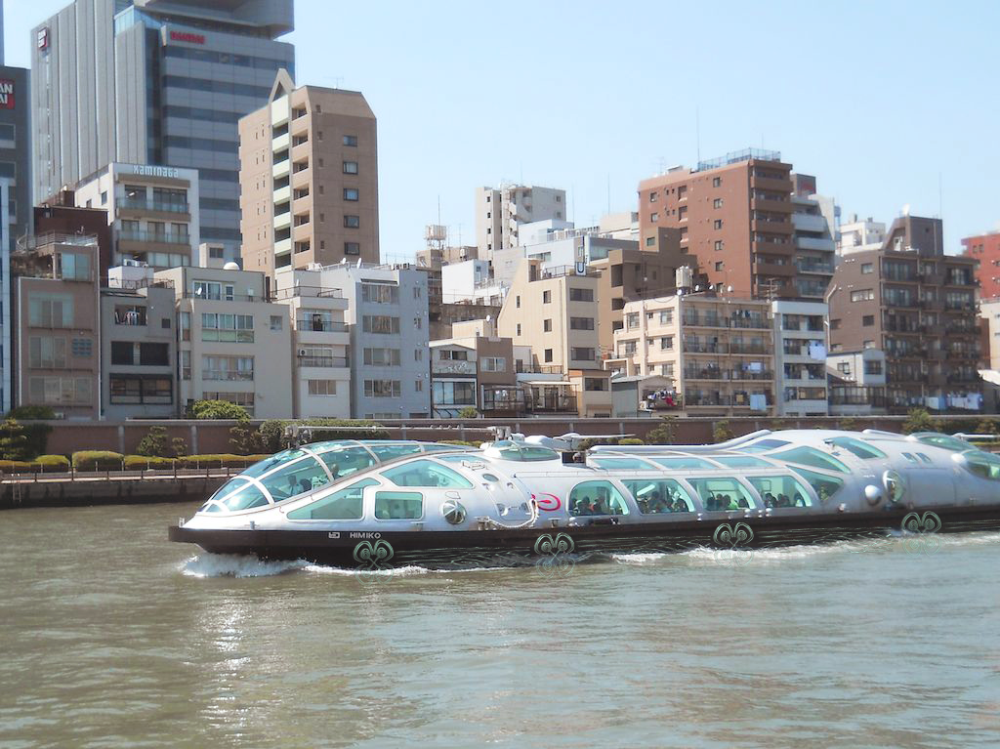
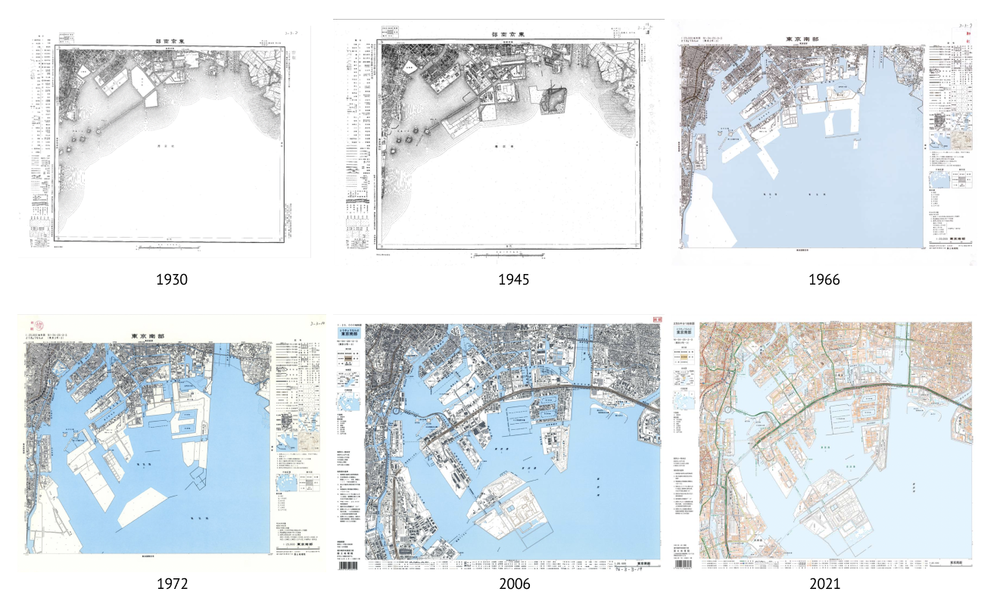
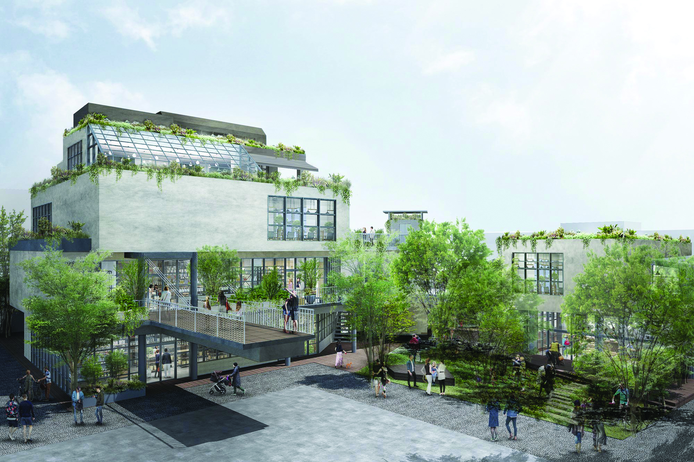
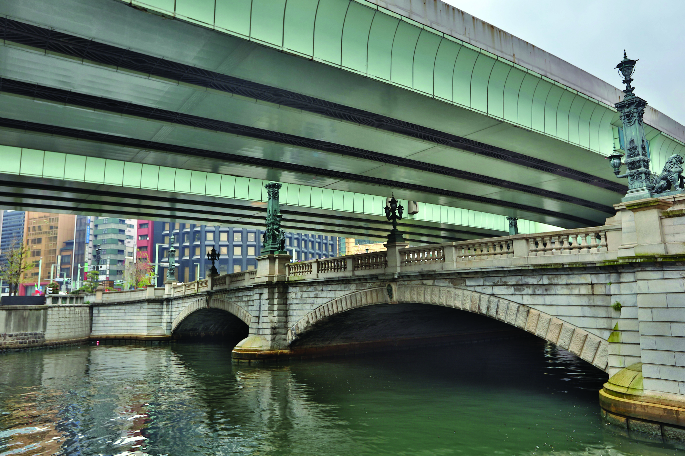
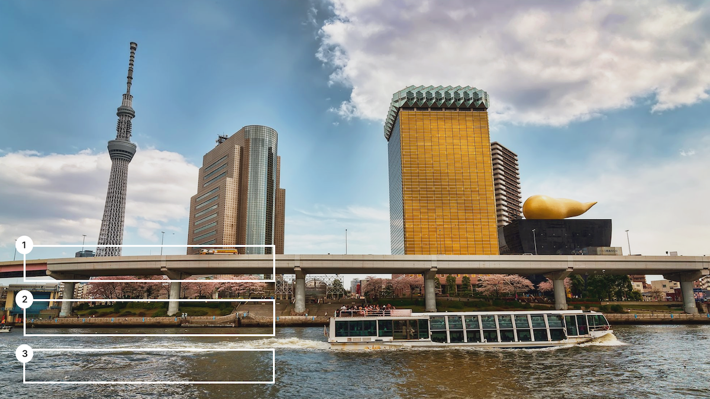
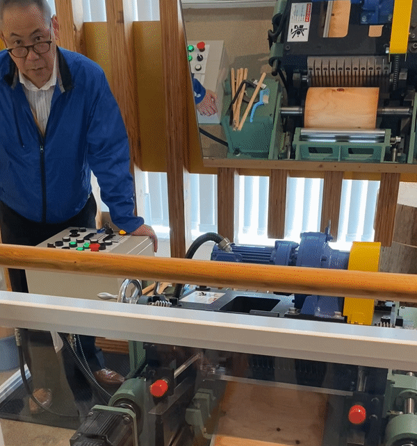
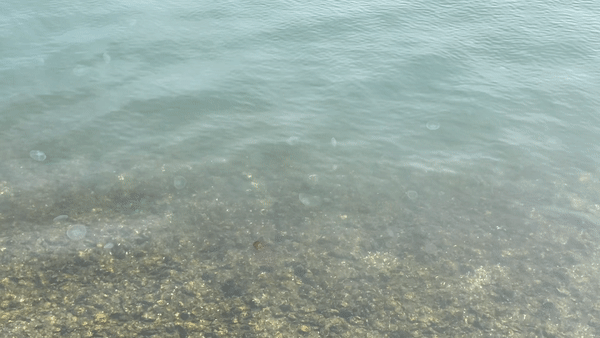
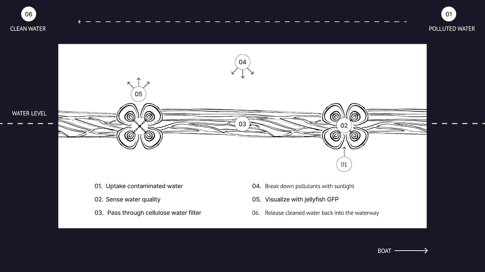

By 2043, Tokyo is expected to grow 7.1% in population, with goals of becoming a pedestrian-friendly city. How can we preserve the city's cultural heritage while moving into the future? Kirage is a boat attachment using a bio-signal system to monitor and purify water quality as it moves through Tokyo's neglected urban waterways.

Shinkiba — whose name means "new lumberyard" — was established in 1930, served as a landfill from 1957 to 1966, and completed land reclamation in 2021. Today it holds entertainment venues, industrial spaces, and green areas: a layered history embedded in urban geography.
As Tokyo's population grows and the city pursues pedestrian-friendly infrastructure, its neglected waterways represent both a challenge and an opportunity. Kirage explores how speculative design can reconnect residents with the city's waterways, cultural memory, and ecological future.

Shinkiba's land use history and urban transformation.
Source: Geospatial Information
Authority of Japan, the Ministry of Land, Infrastructure, Transport and Tourism
Tokyo's population is projected to increase 7.1% by 2030, with 52% growth among foreign nationals. The local government is pursuing pedestrian-friendly infrastructure — reclaiming and restructuring existing transportation corridors. But the waterways have been left behind.


(Source: Metropolis)
Left: Senrogai ("Railroad Town") is a 1.7 development on the former Odakyu tracks designated for shopping, markets, traditional ryokan, hotel, etc.
Right: Nihonbashi is one of the many waterways that were destroyed by Japan's post-war industrialization due to manufacturing, human waste, and railroad construction that prevented pedestrians from using the river space.

Post-war industrialization destroyed pedestrian-accessible waterways through pollution and infrastructure built over canals.
Re-engaging residents requires education and community involvement — the river is out of sight and out of mind.
Concrete support columns and sewage runoff compromise water quality and restrict commercial boat accessibility.
Kirage is a speculative attachment for existing waterway vessels. It harnesses two emerging biological technologies: cellulose nano-crystal powder — developed at Chalmers University — which purifies water through absorption and sunlight-triggered pollutant breakdown; and Green Fluorescent Protein (GFP) extracted from jellyfish, which acts as a biosensor by fluorescing in the presence of pollutants.
Together, these systems allow the vessel to passively monitor and improve water quality on each journey — transforming existing boat routes into a distributed environmental sensing and remediation network.


Material studies: wood structure and Green Fluorescent Protein (GFP) biosensor from jellyfish.

Kirage proposes that urban waterway revitalization doesn't require tearing down infrastructure — it can begin with what already floats. By instrumenting existing vessels with biological sensing and purification technology, cities like Tokyo can begin to reconnect residents with their waterways while actively improving water quality.
The project demonstrates how speculative design can bridge deep historical research, biological science, and urban planning into a coherent future proposition — grounded in a specific place and its particular constraints.